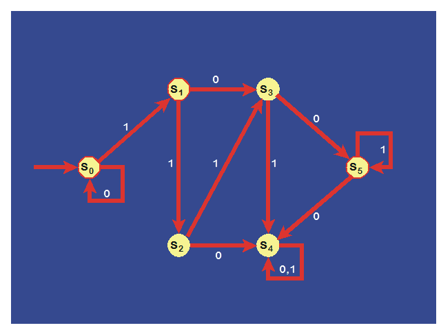
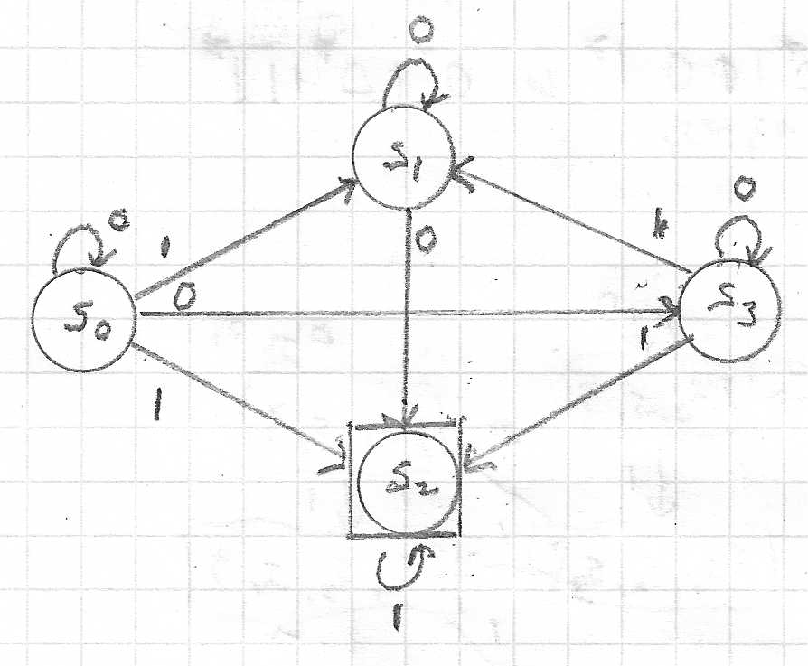
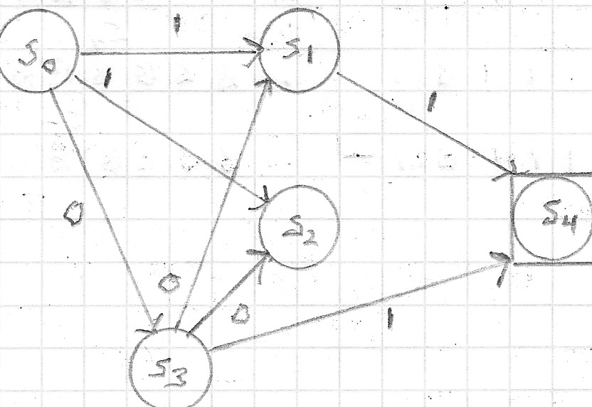

FSM Homework
Total Points = 136
-
(4 points) Let G = (V, T, S, P ) be a phrase-structure grammar with V = { 0, 1, A, S }, T = { 0, 1 } and
the set of productions P consisting of
S →1 1S,
S →2 00A,
A →3 0A,
A →4 0.
- Show that 11110000 ∈ L(G).
- Show that 111110 ∉ L(G).
-
(16 points) Let V = { S, A, B, a, b } and T = { a, b }.
Find the language generated by G = ( V, T, S, P) when the set P of productions consists of:
-
S →1 AB,
A →2 ab,
B →3 bb
.
-
S →1 AB,
S →2 aA,
A →3 a,
B →4 ba
.
-
S →1 AB,
S →2 AA,
A →3 aB,
A →4 ab,
B →5 b
.
-
S →1 AA,
S →2 B,
A →3 aaA,
A →4 aa,
B →5 bB,
B →6 b
.
-
S →1 AB,
A →2 aAb,
B →3 bBa,
A →4 λ,
B →5 λ
.
- (6 points) Construct a context-free grammar to generate the following sets:
- { 012n | n ≥ 0 }
- { 0n12n | n ≥ 0 }
-
{ 0n1m0n | m ≥ 0 /\ n
≥ 0 }
-
(4 points) A palindrome is a string that reads the same backward as it does forward, that is, a string w, where
w = wr, where wr is the reversal of the string w.
Find a context-free grammar that generates the set of all palindromes over the alphabet { 0, 1 }.
-
(12 points) Let G = ( V, T, S, P ) be the grammar with V = { a, b, c, S }, T = { a, b, c } and the set
P of productions
S →1 abS,
S →2 bcS,
S →3 bbS,
S →4 a,
S →5 cb.
Construct derivation trees for the following strings.
- bcbba
- bbbcbba
- bcabbbbbbca
- (24 points) Given the following set of productions in EBNF for some grammar G in which E is the start symbol:
| < E > |
::= |
< E > + < T > | < E > – < T > | < T >
|
| < T > |
::= |
< T > * < F > | < T > / < F > | < F >
|
| < F > |
::= |
( < E > ) | x | y | z
|
- Show the set of productions using arrow notation
- Create a derivation tree for ( ( x * ( y + z ) ) – z ).
- Using a PDA simulation, show that ( ( x * ( y + z ) ) – z ) is a valid string.
- (10 points) Determine whether the string 01001 is matched by each of the following regular expressions.
- (0 ∪ 1)*
- 0*101*
- (010)*0*1*
- (010 ∪ 011)(00 ∪ 01)
- 000*01
- (10 points) Express each of the following sets using a regular expression.
- the set containing all strings with 0, 1 or 2 bits
- the set of strings of two 0s, followed by zero or more 1s, and ending with a 0
- the set of strings with every 1 followed by two 0s
- the set of strings ending in 00 and not containing 11
- the set of strings containing an even number of a 1s
- (8 points) Determine the language recognized by the given DFSA (final states are shown in red octagons).

- (16 points) Given the following NDFSA (final states are shown in rectangles):

- Determine the state table for the given NDFSA.
- Determine the corresponding DFSA.
- (16 points) Let T be the Turing machine defined by the five-tuples:
( s0, 0, s1, 0, R )
( s0, 1, s0, 1, R )
( s0, B, s2, B, L )
( s1, 0, s0, 1, R )
( s1, 1, s1, 0, R )
( s1, B, s2, B, L )
( s2, 0, s2, 0, L )
( s2, 1, s2, 1, L )
( s2, B, s3, 0, R )
|
For each of the given initial tapes, determine the final tape when T halts, assuming that T begins
in initial position.
| a. |
| . . . |
B |
B |
0 |
0 |
0 |
0 |
B |
B |
. . . |
|
| b. |
| . . . |
B |
B |
1 |
1 |
1 |
1 |
B |
B |
. . . |
|
| c. |
| . . . |
B |
B |
0 |
1 |
0 |
1 |
B |
B |
. . . |
|
| d. |
| . . . |
B |
B |
1 |
0 |
1 |
0 |
B |
B |
. . . |
|
- (10 points)
1) Find the strings accepted by the non-deterministic finite state automaton shown below. 2) Determine the state table for it. 3) Find the state diagram for the deterministic finite state autonmaton equivalent to it. And, 4) Verify that the same strings are accepted by the deterministic version.
Note: the final state is shown in a square.

-
(10 points extra credit)
Construct a Turing machine (your answer must show all of the 5-tuples involved) that computes n mod 3, where n ≥ 0. You must use unary ones format: 0 is 1, 1 is 11, 2 is 111, and n is n+1 1s.
Note that all computations: of n mod 3 must be either 0 (1), 1 (11), or 2 (111).
Be sure to leave the read/write head over the leftmost 1 when done.
Verify your Turing machine by giving a step-by-step trace of 2 mod 3 and 7 mod 3.
Solutions to Homework on FSM
(to be posted after the due date)
© 2002-09-13 rcm27 ; last update
2021-05-15 1:56